CODING AGENTS AS PIXEL WORLD MODELS
traex/DeepSeek-V4.1-Flash · common50_0034
点击播放 · 原生 RGB 像素
逐轮保存的候选
回放视频、检查图与代码变化。
每份候选均可单独播放。实际图片检查记录在下方工具轨迹中。
候选 01播放与检查图
点击播放 · 原生 RGB 像素
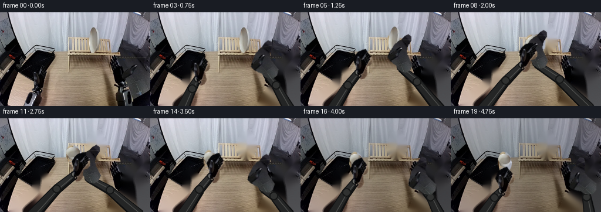
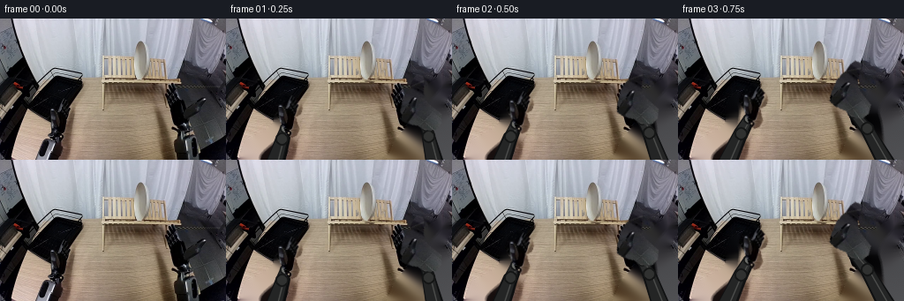
展开代码变化
--- 上一保存版本
+++ 本次保存版本
@@ -0,0 +1,249 @@
+"""Generate the 5-second robotic plate-transfer sequence from first_frame.png."""
+
+from pathlib import Path
+
+import cv2
+import numpy as np
+from PIL import Image, ImageFilter
+
+from artifact_io import save
+
+
+ROOT = Path(__file__).resolve().parent
+W, H, N = 256, 160, 20
+
+
+def polygon_mask(points, feather=0.0):
+ mask = np.zeros((H, W), dtype=np.uint8)
+ cv2.fillPoly(mask, [np.asarray(points, dtype=np.int32)], 255)
+ if feather:
+ mask = np.asarray(
+ Image.fromarray(mask).filter(ImageFilter.GaussianBlur(feather))
+ )
+ return mask
+
+
+def composite_warped(frame, rgba, src_anchor, dst_anchor, angle=0.0,
+ scale_x=1.0, scale_y=1.0):
+ """Composite a full-canvas RGBA layer with an affine transform."""
+ theta = np.deg2rad(angle)
+ cos_a, sin_a = np.cos(theta), np.sin(theta)
+ linear = np.array(
+ [[scale_x * cos_a, -scale_y * sin_a],
+ [scale_x * sin_a, scale_y * cos_a]],
+ dtype=np.float64,
+ )
+ src = np.asarray(src_anchor, dtype=np.float64)
+ dst = np.asarray(dst_anchor, dtype=np.float64)
+ shift = dst - linear @ src
+ matrix = np.column_stack((linear, shift))
+
+ rgb = cv2.warpAffine(
+ rgba[:, :, :3], matrix, (W, H), flags=cv2.INTER_LINEAR,
+ borderMode=cv2.BORDER_CONSTANT, borderValue=(0, 0, 0),
+ )
+ alpha = cv2.warpAffine(
+ rgba[:, :, 3], matrix, (W, H), flags=cv2.INTER_LINEAR,
+ borderMode=cv2.BORDER_CONSTANT, borderValue=0,
+ ).astype(np.float32)[:, :, None] / 255.0
+ return np.clip(
+ frame.astype(np.float32) * (1.0 - alpha) + rgb.astype(np.float32) * alpha,
+ 0, 255,
+ ).astype(np.uint8)
+
+
+def tapered_segment(frame, p0, p1, r0, r1, color, edge):
+ p0 = np.asarray(p0, dtype=np.float64)
+ p1 = np.asarray(p1, dtype=np.float64)
+ direction = p1 - p0
+ length = np.linalg.norm(direction)
+ if length < 1e-6:
+ return
+ normal = np.array([-direction[1], direction[0]]) / length
+ quad = np.array(
+ [p0 + normal * r0, p1 + normal * r1,
+ p1 - normal * r1, p0 - normal * r0],
+ dtype=np.int32,
+ )
+ cv2.fillConvexPoly(frame, quad, edge, lineType=cv2.LINE_AA)
+ inner = np.array(
+ [p0 + normal * (r0 - 1.3), p1 + normal * (r1 - 1.3),
+ p1 - normal * (r1 - 1.3), p0 - normal * (r0 - 1.3)],
+ dtype=np.int32,
+ )
+ cv2.fillConvexPoly(frame, inner, color, lineType=cv2.LINE_AA)
+ highlight0 = p0 + normal * (r0 * 0.30)
+ highlight1 = p1 + normal * (r1 * 0.30)
+ cv2.line(
+ frame, tuple(np.round(highlight0).astype(int)),
+ tuple(np.round(highlight1).astype(int)), (78, 79, 77), 1,
+ lineType=cv2.LINE_AA,
+ )
+
+
+def draw_arm(frame, shoulder, elbow, wrist, collar_color=(111, 112, 108)):
+ shadow = np.array([1, 2], dtype=np.int32)
+ tapered_segment(
+ frame, np.asarray(shoulder) + shadow, np.asarray(elbow) + shadow,
+ 9.5, 7.0, (19, 20, 20), (10, 11, 12),
+ )
+ tapered_segment(
+ frame, np.asarray(elbow) + shadow, np.asarray(wrist) + shadow,
+ 7.0, 5.5, (20, 21, 21), (10, 11, 12),
+ )
+ tapered_segment(frame, shoulder, elbow, 9.0, 6.6, (36, 37, 37), (15, 16, 17))
+ tapered_segment(frame, elbow, wrist, 6.6, 5.0, (42, 43, 43), (16, 17, 18))
+ cv2.circle(frame, tuple(np.round(elbow).astype(int)), 7, (20, 21, 21),
+ -1, lineType=cv2.LINE_AA)
+ cv2.circle(frame, tuple(np.round(elbow).astype(int)), 5, (48, 49, 48),
+ -1, lineType=cv2.LINE_AA)
+ wrist_i = tuple(np.round(wrist).astype(int))
+ cv2.circle(frame, wrist_i, 6, (23, 24, 24), -1, lineType=cv2.LINE_AA)
+ cv2.circle(frame, wrist_i, 4, collar_color, -1, lineType=cv2.LINE_AA)
+
+
+def main():
+ image = np.asarray(Image.open(ROOT / "first_frame.png").convert("RGB")).copy()
+ assert image.shape == (H, W, 3)
+
+ plate_points = [
+ (163, 21), (169, 23), (176, 33), (179, 43), (178, 55),
+ (173, 64), (166, 70), (158, 69), (152, 63), (149, 54),
+ (150, 39), (155, 27),
+ ]
+ plate_mask = polygon_mask(plate_points, feather=0.65)
+
+ left_hand_points = [
+ (53, 101), (57, 94), (63, 89), (68, 87), (72, 91),
+ (77, 95), (82, 99), (84, 105), (82, 111), (76, 115),
+ (78, 122), (81, 129), (78, 135), (72, 138), (67, 135),
+ (63, 128), (60, 121), (56, 115), (52, 110),
+ ]
+ right_hand_points = [
+ (207, 106), (210, 98), (215, 91), (219, 85), (225, 80),
+ (232, 76), (238, 70), (244, 67), (249, 71), (249, 78),
+ (245, 84), (242, 90), (241, 97), (243, 104), (247, 111),
+ (251, 119), (247, 128), (240, 132), (232, 131), (226, 126),
+ (222, 120), (216, 116), (211, 112),
+ ]
+ left_hand_mask = polygon_mask(left_hand_points, feather=0.45)
+ right_hand_mask = polygon_mask(right_hand_points, feather=0.45)
+
+ # The full arm footprints include the hands and the visible lower linkages.
+ left_arm_region = polygon_mask([
+ (17, 160), (20, 146), (29, 137), (42, 130), (52, 124),
+ (57, 115), (55, 104), (59, 94), (66, 87), (75, 90),
+ (82, 98), (85, 107), (80, 117), (82, 128), (76, 137),
+ (66, 148), (56, 160),
+ ], feather=1.0)
+ right_arm_region = polygon_mask([
+ (184, 160), (190, 146), (197, 135), (204, 126), (211, 117),
+ (208, 107), (211, 96), (218, 86), (226, 79), (235, 73),
+ (243, 67), (250, 69), (253, 78), (249, 88), (244, 96),
+ (245, 105), (252, 116), (256, 126), (256, 160),
+ ], feather=1.0)
+ removal = np.maximum.reduce([plate_mask, left_arm_region, right_arm_region])
+ removal = cv2.dilate((removal > 18).astype(np.uint8) * 255,
+ np.ones((3, 3), np.uint8), iterations=1)
+ base = cv2.inpaint(image, removal, 4, cv2.INPAINT_TELEA)
+
+ plate_rgba = np.dstack((image, plate_mask))
+ left_rgba = np.dstack((image, left_hand_mask))
+ right_rgba = np.dstack((image, right_hand_mask))
+
+ right_anchor = (230.0, 124.0)
+ left_anchor = (65.0, 128.0)
+
+ # Wrist positions are keyed at 4 fps. They describe a right-hand pickup,
+ # a short two-hand transfer, and a left-hand placement on the black rack.
+ right_wrists = [
+ (230, 124), (226, 121), (215, 114), (198, 106), (177, 99),
+ (170, 94), (163, 91), (153, 88), (145, 87), (139, 91),
+ (142, 97), (150, 102), (163, 109), (177, 115), (191, 119),
+ (203, 122), (212, 124), (218, 125), (225, 125), (230, 124),
+ ]
+ left_wrists = [
+ (65, 128), (67, 124), (72, 119), (80, 113), (89, 107),
+ (98, 102), (106, 97), (114, 92), (121, 89), (127, 89),
+ (130, 92), (127, 95), (119, 96), (111, 96), (103, 98),
+ (97, 102), (93, 107), (90, 113), (88, 119), (86, 123),
+ ]
+ plate_centers = [
+ (164, 47), (164, 47), (164, 47), (164, 47), (164, 47),
+ (163, 45), (159, 43), (152, 47), (144, 53), (137, 57),
+ (131, 61), (125, 64), (117, 67), (109, 70), (102, 73),
+ (97, 75), (94, 76), (92, 76), (91, 76), (91, 76),
+ ]
+ plate_angles = [
+ 0, 0, 0, 0, 0, 7, 18, 36, 56, 70,
+ 78, 81, 84, 86, 87, 88, 89, 89, 89, 89,
+ ]
+ plate_sy = [
+ 1.0, 1.0, 1.0, 1.0, 1.0, 0.94, 0.85, 0.76, 0.68, 0.61,
+ 0.57, 0.54, 0.52, 0.51, 0.50, 0.49, 0.48, 0.48, 0.48, 0.48,
+ ]
+ plate_sx = [
+ 1.0, 1.0, 1.0, 1.0, 1.0, 1.03, 1.08, 1.13, 1.18, 1.21,
+ 1.23, 1.24, 1.25, 1.25, 1.25, 1.25, 1.25, 1.25, 1.25, 1.25,
+ ]
+
+ frames = np.empty((N, H, W, 3), dtype=np.uint8)
+ for i in range(N):
+ if i == 0:
+ frames[i] = image
+ continue
+
+ frame = base.copy()
+
+ # A small contact shadow makes the final placement read as resting.
+ if i >= 15:
+ strength = min(1.0, (i - 14) / 3.0)
+ shadow = np.zeros_like(frame, dtype=np.uint8)
+ center = plate_centers[i]
+ cv2.ellipse(
+ shadow, center, (19, 7), 0, 0, 360, (5, 6, 7), -1,
+ lineType=cv2.LINE_AA,
+ )
+ frame = np.clip(
+ frame.astype(np.float32) * (1.0 - 0.24 * strength)
+ + shadow.astype(np.float32) * (0.24 * strength), 0, 255,
+ ).astype(np.uint8)
+
+ frame = composite_warped(
+ frame, plate_rgba, (164, 47), plate_centers[i],
+ plate_angles[i], plate_sx[i], plate_sy[i],
+ )
+
+ right_wrist = np.asarray(right_wrists[i], dtype=np.float64)
+ left_wrist = np.asarray(left_wrists[i], dtype=np.float64)
+ right_elbow = np.array([
+ 0.55 * right_wrist[0] + 0.45 * 233.0,
+ 0.55 * right_wrist[1] + 0.45 * 147.0,
+ ])
+ left_elbow = np.array([
+ 0.55 * left_wrist[0] + 0.45 * 59.0,
+ 0.55 * left_wrist[1] + 0.45 * 150.0,
+ ])
+ draw_arm(frame, (236, 164), right_elbow, right_wrist)
+ draw_arm(frame, (54, 166), left_elbow, left_wrist)
+
+ # Keep the original gripper appearance; only its pose is animated.
+ right_angle = max(-24.0, min(0.0, -0.55 * (right_wrist[0] - 177.0)))
+ left_angle = max(0.0, min(22.0, 0.42 * (left_wrist[0] - 65.0)))
+ right_sx = 0.94 if 4 <= i <= 10 else 1.0
+ left_sx = 0.94 if 8 <= i <= 17 else 1.0
+ frame = composite_warped(
+ frame, right_rgba, right_anchor, tuple(right_wrist),
+ right_angle, right_sx, 1.0,
+ )
+ frame = composite_warped(
+ frame, left_rgba, left_anchor, tuple(left_wrist),
+ left_angle, left_sx, 1.0,
+ )
+ frames[i] = frame
+
+ save(frames, ROOT)
+
+
+if __name__ == "__main__":
+ main()
候选 02播放与检查图
点击播放 · 原生 RGB 像素

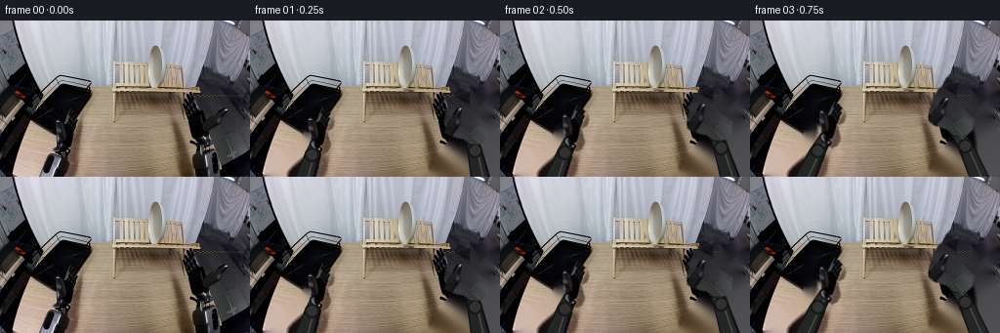
展开代码变化
--- 上一保存版本
+++ 本次保存版本
@@ -157,22 +157,22 @@
# Wrist positions are keyed at 4 fps. They describe a right-hand pickup,
# a short two-hand transfer, and a left-hand placement on the black rack.
right_wrists = [
- (230, 124), (226, 121), (215, 114), (198, 106), (177, 99),
- (170, 94), (163, 91), (153, 88), (145, 87), (139, 91),
- (142, 97), (150, 102), (163, 109), (177, 115), (191, 119),
- (203, 122), (212, 124), (218, 125), (225, 125), (230, 124),
+ (230, 124), (227, 121), (220, 117), (210, 112), (198, 108),
+ (186, 105), (177, 104), (168, 103), (160, 102), (153, 103),
+ (148, 106), (147, 110), (155, 114), (166, 118), (178, 121),
+ (191, 123), (203, 124), (213, 125), (223, 125), (230, 124),
]
left_wrists = [
- (65, 128), (67, 124), (72, 119), (80, 113), (89, 107),
- (98, 102), (106, 97), (114, 92), (121, 89), (127, 89),
- (130, 92), (127, 95), (119, 96), (111, 96), (103, 98),
- (97, 102), (93, 107), (90, 113), (88, 119), (86, 123),
+ (65, 128), (67, 126), (71, 123), (77, 119), (84, 116),
+ (91, 112), (98, 109), (104, 106), (108, 104), (111, 104),
+ (112, 105), (110, 107), (107, 109), (103, 112), (99, 114),
+ (95, 116), (92, 118), (90, 119), (88, 120), (86, 121),
]
plate_centers = [
(164, 47), (164, 47), (164, 47), (164, 47), (164, 47),
- (163, 45), (159, 43), (152, 47), (144, 53), (137, 57),
- (131, 61), (125, 64), (117, 67), (109, 70), (102, 73),
- (97, 75), (94, 76), (92, 76), (91, 76), (91, 76),
+ (163, 46), (159, 45), (152, 48), (144, 53), (136, 57),
+ (129, 60), (122, 62), (114, 65), (106, 68), (99, 71),
+ (94, 73), (91, 75), (89, 76), (88, 76), (88, 76),
]
plate_angles = [
0, 0, 0, 0, 0, 7, 18, 36, 56, 70,
候选 03播放与检查图
点击播放 · 原生 RGB 像素
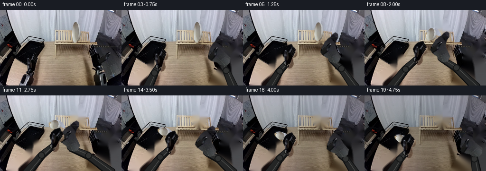
展开代码变化
--- 上一保存版本
+++ 本次保存版本
@@ -171,20 +171,20 @@
plate_centers = [
(164, 47), (164, 47), (164, 47), (164, 47), (164, 47),
(163, 46), (159, 45), (152, 48), (144, 53), (136, 57),
- (129, 60), (122, 62), (114, 65), (106, 68), (99, 71),
- (94, 73), (91, 75), (89, 76), (88, 76), (88, 76),
+ (128, 61), (120, 64), (111, 68), (102, 73), (94, 79),
+ (88, 84), (84, 88), (82, 91), (81, 93), (81, 94),
]
plate_angles = [
- 0, 0, 0, 0, 0, 7, 18, 36, 56, 70,
- 78, 81, 84, 86, 87, 88, 89, 89, 89, 89,
+ 0, 0, 0, 0, 0, 2, 5, 9, 14, 18,
+ 21, 23, 25, 26, 27, 27, 28, 28, 28, 28,
]
plate_sy = [
- 1.0, 1.0, 1.0, 1.0, 1.0, 0.94, 0.85, 0.76, 0.68, 0.61,
- 0.57, 0.54, 0.52, 0.51, 0.50, 0.49, 0.48, 0.48, 0.48, 0.48,
+ 1.0, 1.0, 1.0, 1.0, 1.0, 0.92, 0.82, 0.72, 0.63, 0.56,
+ 0.51, 0.47, 0.44, 0.41, 0.39, 0.38, 0.37, 0.36, 0.36, 0.36,
]
plate_sx = [
- 1.0, 1.0, 1.0, 1.0, 1.0, 1.03, 1.08, 1.13, 1.18, 1.21,
- 1.23, 1.24, 1.25, 1.25, 1.25, 1.25, 1.25, 1.25, 1.25, 1.25,
+ 1.0, 1.0, 1.0, 1.0, 1.0, 1.03, 1.06, 1.09, 1.12, 1.15,
+ 1.18, 1.20, 1.22, 1.24, 1.25, 1.25, 1.26, 1.26, 1.26, 1.26,
]
frames = np.empty((N, H, W, 3), dtype=np.uint8)
可观测工具轨迹
实际执行的命令与返回图片。
命令 1exit 0
/bin/bash -c "pwd && rg --files -g '"'!*'"\\.git*' | sed -n '1,120p'"
命令 2exit 0
/bin/bash -c "sed -n '1,240p' prompt.txt"
命令 3exit 0
/bin/bash -c "sed -n '1,280p' GENERATION_RULES.md"
命令 4exit 0
/bin/bash -c "find . -maxdepth 3 -type f -printf '%p %s bytes\\n' | sort | sed -n '1,160p'"
命令 5exit 0
/bin/bash -c "sed -n '1,240p' artifact_io.py"
命令 6exit 0
/bin/bash -c 'cat task_spec.json'
命令 7exit 0
/bin/bash -c "python - <<'PY'
from PIL import Image
im=Image.open('first_frame.png')
print(im.size, im.mode)
PY"命令 8exit 0
/bin/bash -c "which convert || which magick || true; which ffmpeg || true; python - <<'PY'
import cv2
print('cv2', cv2.__version__)
PY"命令 9exit 0
/bin/bash -c "python - <<'PY'
from PIL import Image
im=Image.open('first_frame.png')
for name,box in [('scene',(0,0,256,160)),('plate',(120,10,200,100)),('right',(165,55,256,160)),('left',(20,70,130,160)),('rack',(25,45,130,130))]:
c=im.crop(box)
c.resize((c.width*4,c.height*4),Image.Resampling.NEAREST).save(f'.tmp/{name}.png')
PY"命令 10exit 0
/bin/bash -c 'python generate.py'
命令 11exit 0
/bin/bash -c "python - <<'PY'
from PIL import Image
for i in [4,8,12,16,19]:
im=Image.open(f'frames/{i:02d}.png')
im.resize((1024,640),Image.Resampling.NEAREST).save(f'.tmp/frame_{i:02d}_big.png')
PY"命令 12exit 0
/bin/bash -c "python - <<'PY'
from PIL import Image
im=Image.open('first_frame.png')
box=(125,15,190,85)
c=im.crop(box)
c.resize((c.width*8,c.height*8),Image.Resampling.NEAREST).save('.tmp/plate8.png')
PY"命令 13exit 0
/bin/bash -c "python generate.py && python - <<'PY'
from PIL import Image
import numpy as np
im=Image.open('first_frame.png').convert('RGB')
f0=np.asarray(Image.open('frames/00.png').convert('RGB'))
print('first identical:', np.array_equal(np.asarray(im), f0))
for i in [0,4,8,12,16,19]:
Image.open(f'frames/{i:02d}.png').resize((1024,640),Image.Resampling.NEAREST).save(f'.tmp/frame_{i:02d}_big.png')
PY"命令 14exit 1
/bin/bash -c "python - <<'PY' import numpy as np from generate import plate_points, polygon_mask from PIL import Image import cv2 m=polygon_mask(plate_points,.65) for angle,sx,sy in [(0,1,1),(89,1.25,.48),(0,1.25,.48)]: t=np.deg2rad(angle);c=np.cos(t);s=np.sin(t) L=np.array([[sx*c,-sy*s],[sx*s,sy*c]]) src=np.array([164,47.]); dst=np.array([88,76.]) M=np.column_stack((L,dst-L@src)) a=cv2.warpAffine(m,M,(256,160),flags=cv2.INTER_LINEAR) ys,xs=np.where(a>2) print(angle,sx,sy,(xs.min(),ys.min(),xs.max(),ys.max()), L) PY"
命令 15exit 0
/bin/bash -c "python - <<'PY' import numpy as np, cv2 W,H=256,160 points=[(163,21),(169,23),(176,33),(179,43),(178,55),(173,64),(166,70),(158,69),(152,63),(149,54),(150,39),(155,27)] m=np.zeros((H,W),np.uint8);cv2.fillPoly(m,[np.array(points,np.int32)],255) for angle,sx,sy in [(0,1,1),(89,1.25,.48),(0,1.25,.48)]: t=np.deg2rad(angle);c=np.cos(t);s=np.sin(t) L=np.array([[sx*c,-sy*s],[sx*s,sy*c]]) src=np.array([164.,47.]); dst=np.array([88.,76.]) M=np.column_stack((L,dst-L@src)) a=cv2.warpAffine(m,M,(W,H),flags=cv2.INTER_LINEAR) ys,xs=np.where(a>2) print(angle,sx,sy,(xs.min(),ys.min(),xs.max(),ys.max())) PY"
命令 16exit 0
/bin/bash -c "python generate.py && python - <<'PY'
from PIL import Image
import numpy as np
src=np.asarray(Image.open('first_frame.png').convert('RGB'))
out=np.asarray(Image.open('frames/00.png').convert('RGB'))
print('shape', out.shape, 'dtype', out.dtype, 'frame00 exact', np.array_equal(src,out))
for i in [4,8,12,16,19]:
Image.open(f'frames/{i:02d}.png').resize((1024,640),Image.Resampling.NEAREST).save(f'.tmp/frame_{i:02d}_big.png')
PY"命令 17exit 0
/bin/bash -c "python - <<'PY'
from pathlib import Path
import numpy as np
from PIL import Image
p=Path('.')
fs=sorted((p/'frames').glob('*.png'))
a=np.stack([np.asarray(Image.open(f).convert('RGB')) for f in fs])
print('frames', len(fs), 'shape', a.shape, 'dtype', a.dtype)
print('first_exact', np.array_equal(a[0],np.asarray(Image.open('first_frame.png').convert('RGB'))))
d=np.abs(a[1:].astype(np.int16)-a[:-1].astype(np.int16))
print('frame_delta_mean_range', float(d.mean((1,2,3)).min()), float(d.mean((1,2,3)).max()))
print('all_zero_deltas', int((d.max((1,2,3))==0).sum()))
print('npz', (p/'pixels.npz').is_file(), 'html', (p/'index.html').is_file(), 'inspection', (p/'inspection.png').is_file())
PY"命令 18exit 0
/bin/bash -c 'git status --short 2>/dev/null || true; ls -lh generate.py pixels.npz index.html inspection.png frames/00.png frames/19.png'
视觉工具实际返回图片 1
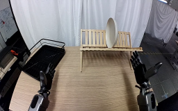
视觉工具实际返回图片 2
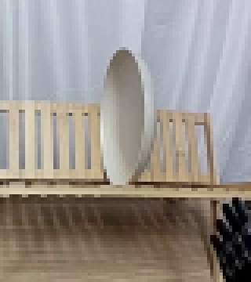
视觉工具实际返回图片 3
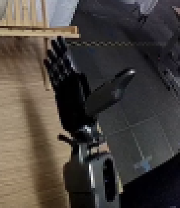
视觉工具实际返回图片 4
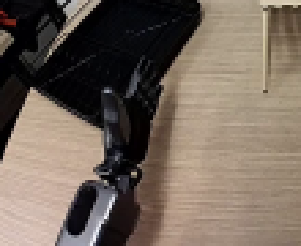
视觉工具实际返回图片 5

视觉工具实际返回图片 6
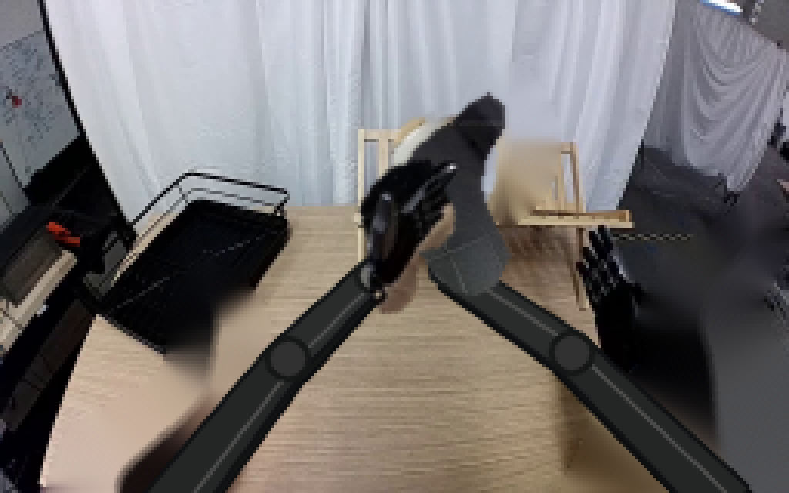
视觉工具实际返回图片 7
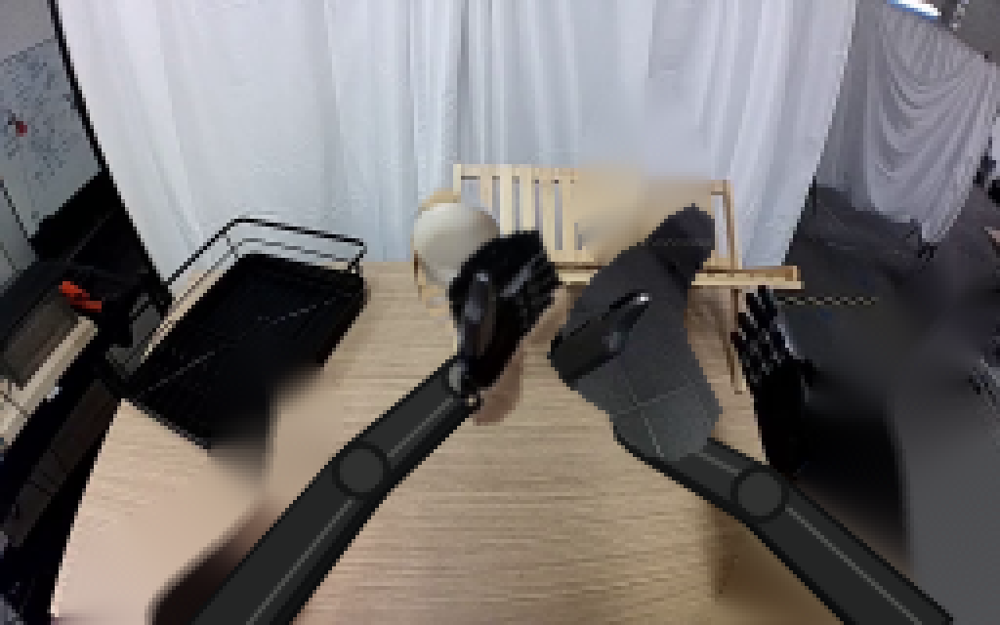
视觉工具实际返回图片 8
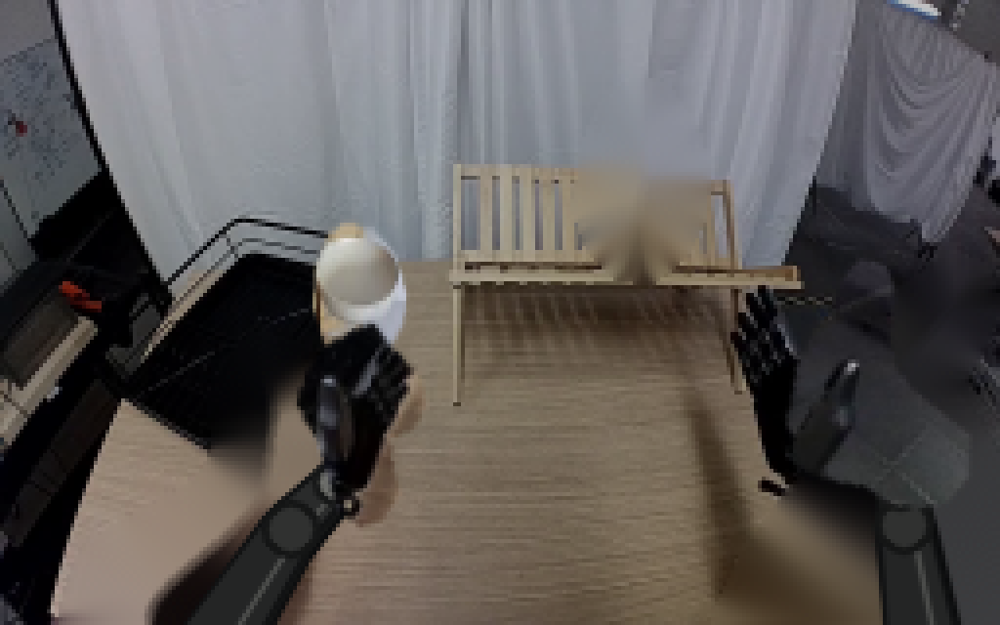
视觉工具实际返回图片 9
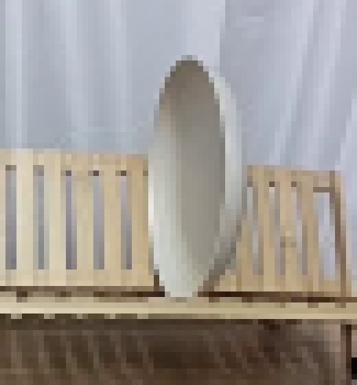
视觉工具实际返回图片 10
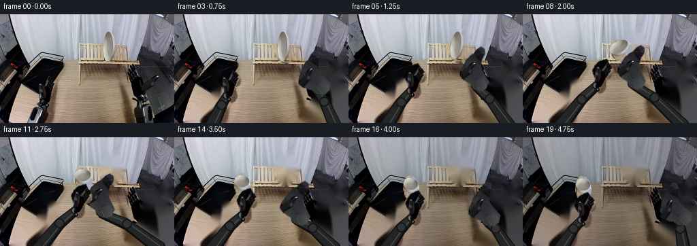
视觉工具实际返回图片 11
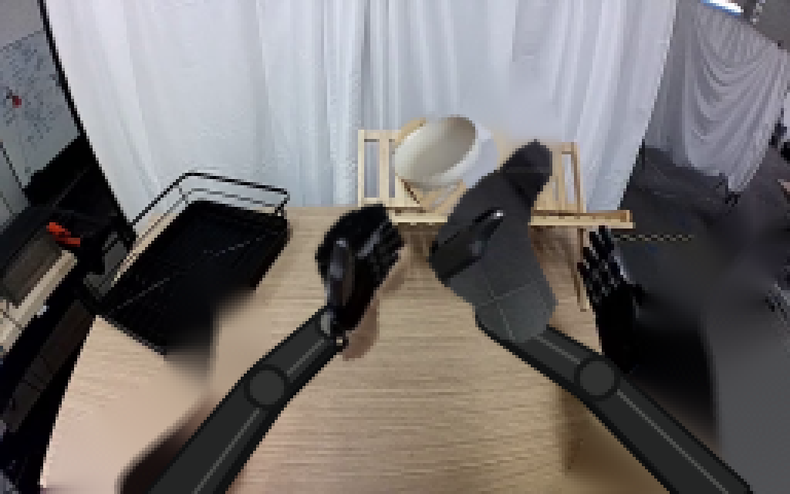
视觉工具实际返回图片 12
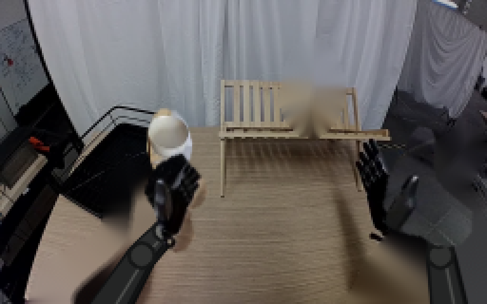
视觉工具实际返回图片 13
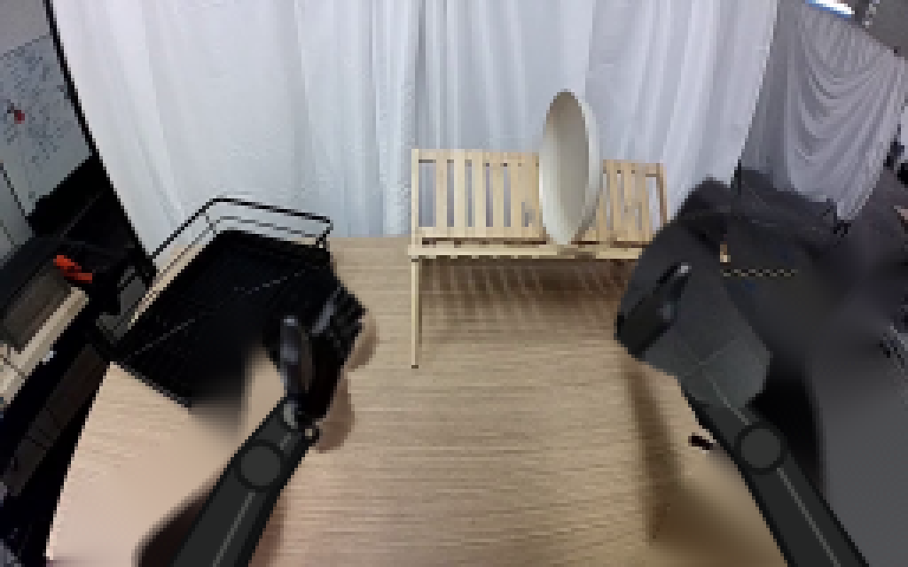
视觉工具实际返回图片 14

视觉工具实际返回图片 15
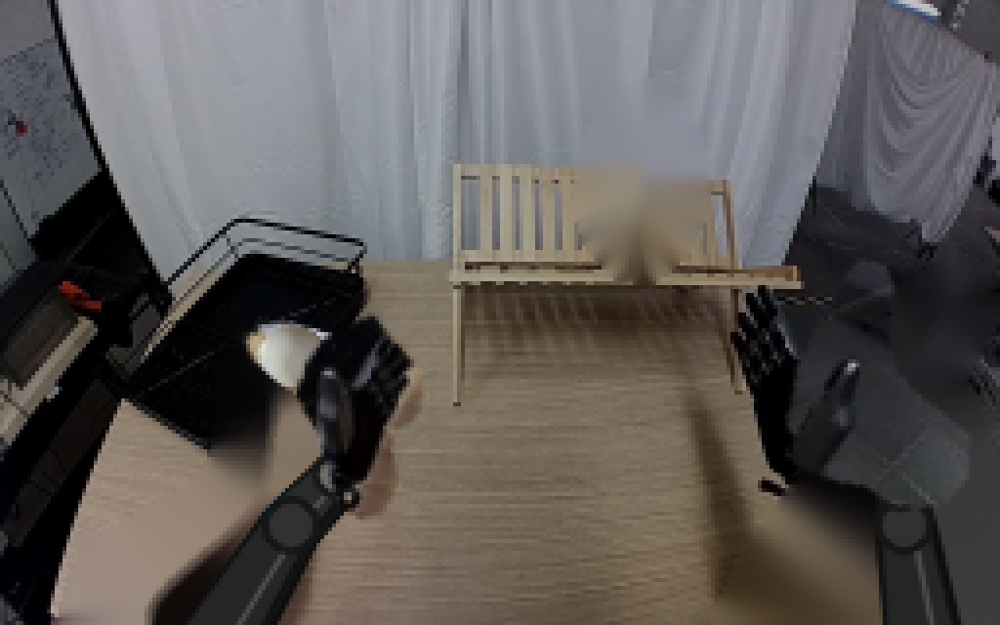
视觉工具实际返回图片 16
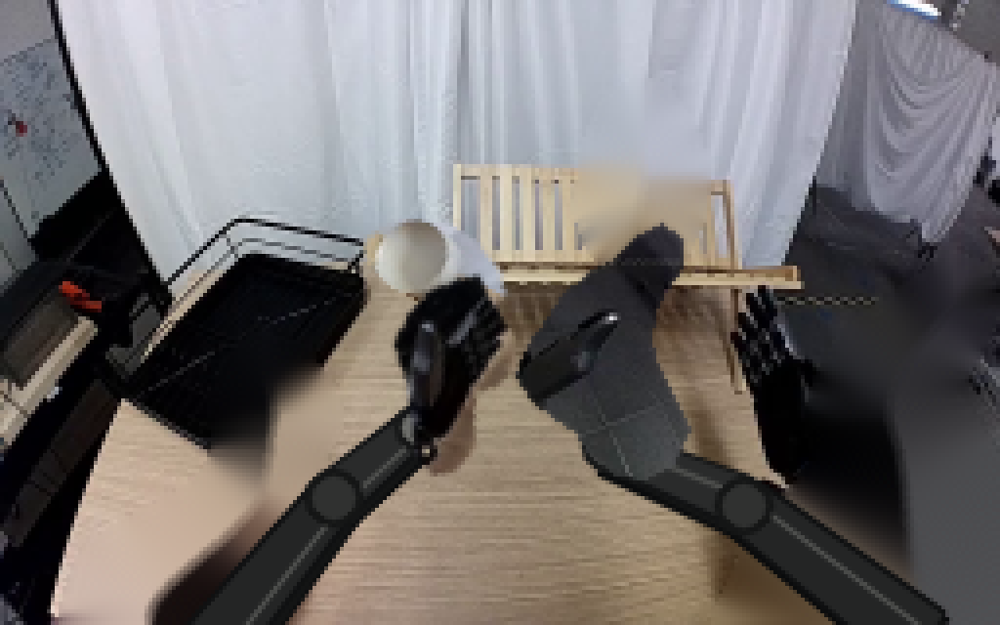
视觉工具实际返回图片 17

保存候选 3 份；完成命令 18 次；可验证图片返回 17 张。原始 API 响应与完整日志保留在本地。